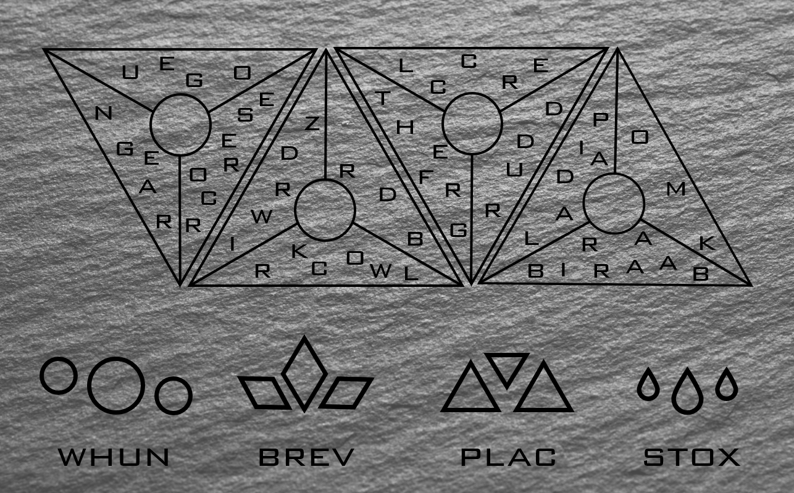

Losing your balance as the ground beneath you shakes, you fall to your knees, dropping the box in the process. As the rumbling subsides, you see the area in which the box was found has opened up wider, revealing a small room, and what looks like a doorway on the other side of the expanse. You stand up and poke your head around the corner of the cell, checking to see if there are any guards nearby. The entire end of the hallway is buried in, with rocks, dirt, and furniture sealing the entrance. You look back in the cell to see the aarakocra and dragonborn getting to their feet, but the human seems to be dead, with a large armoire laying across his chest.
You look at the two others, and say "Well, if we're going to be breaking out of prison together, we might as well be on a first name basis. I'm Vanril." The aarakocra holds out a feathered hand as she says "My name is Ellel. It's nice to meet you. We're lucky to have survived that earthquake, don't you think? I wonder what caused it." Keeping his distance, the dragonborn simply says "Sharash." Getting a closer look at the size of his arms, you're happy to not get too close to Sharash, at least until you know how friendly he is.
As you climb through the makeshift tunnel, the air grows moist, and the rank smell of mold attacks your nostrils. You move from empty room to empty room, each with open doorways before finally finding one with a moss-covered wooden door half blocking it. You kick it a few times, and it easily gives way. Inside, you find the remains of a small armory, with various equipment. Apparently the magical charm that protected it was still partially intact, because while old, the equipment overall is in fairly good condition. The three of you take the time to equip yourselves, even finding some potions, before moving on.
Eventually the landscape changes. Overgrown with strange plants and vines, the path ahead looks treacherous, and Ellel points out that there are some strange spores floating in the air, that probably wouldn't be too great to breathe in. Sharash seems to have found some strange control panel, with various letters written on it in common, and shapes with runes under them. You feel like you can almost read words in the mixed up letters, but it feels like there is something missing.
Looking over your shoulder, Ellel says "I bet this panel could help us with these spores."
